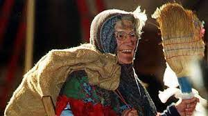
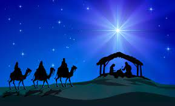

La festa dell'Epifania e la tradizione della befana sono una festa molto sentita in Italia, soprattutto dai
bambini. Secondo la leggenda italiana, la Befana, una donna simile a una strega che cavalcava una scopa, rifiutò
di unirsi ai Re Magi nel loro viaggio per vedere Gesù Bambino. Ben presto si pente di questa decisione e si mette
in viaggio per portare doni a tutti i bambini d'Italia. Se i bambini non fanno i bravi per tutto l'anno, la Befana
lascia loro delle zolle di carbone. Questa festa segna normalmente la fine di una lunga stagione di vacanze in
Italia. Le famiglie si recano spesso in chiesa insieme

